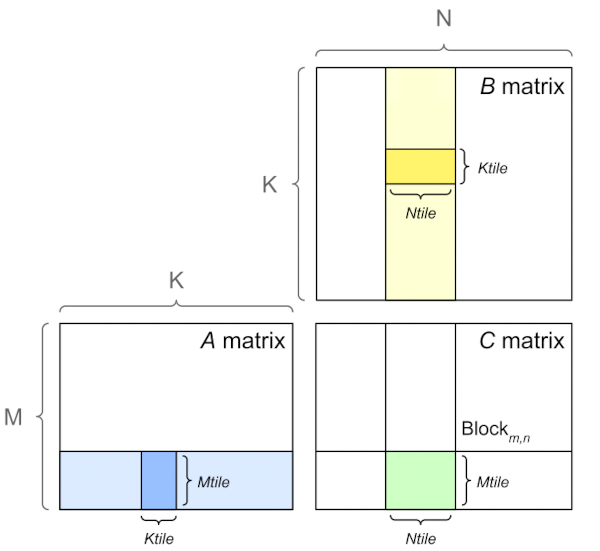
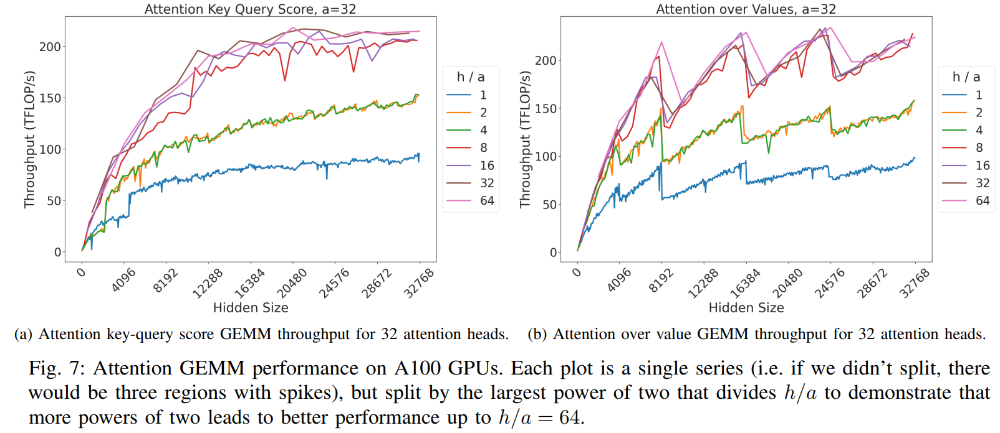
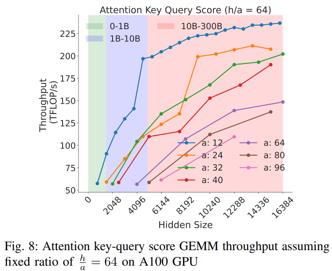

Software Tune Up For The Best Performance
The faster you can make your model to train the sooner the model will finish training, which is important not only to being first to publish something, but also potentially saving a lot of money.
In general maximizing throughput is all about running many experiments and measuring the outcome and choosing the one that is superior.
In certain situations your modeling team may ask you to choose some hyper parameters that will be detrimental to throughput but overall beneficial for the overall model’s success.
MACs vs FLOP vs FLOPS vs FLOP/s
This section is here to try to disambiguate the common performance metric definitions and their relationship to each other.
MAC vs FLOP:
1 FLOP (FLoating point OPeration) can be one of addition, subtraction, multiplication, or division operation.
1 MAC (Multiply-ACCumulate) operation is a multiplication followed by an addition, that is:
a * b + c
Thus 1 MAC = 2 FLOPs. It’s also quite common for modern hardware to perform 1 MAC in a single clock cycle.
Please note that to calculate the number of MACs in relationship to FLOPs the reverse logic applies, that is MACs = 0.5 FLOPs - it’s somewhat confusing since we have just said that 1 MAC = 2 FLOPs, but it checks out - observe: 100 FLOPs = 50 MACs - because there are 2 FLOPs in each MAC.
Moreover, while 1 MAC = 2 FLOPs, the reverse isn’t necessarily true. That is 2 FLOPs isn’t necessarily equal to 1 MAC. For example, if you did .5*.6 100 times it’d be 100 FLOPs, which here would equal to 100 MACs, because here only the multiply part of the MAC is executed.
FLOP vs FLOPS vs FLOP/s
1 FLOP (FLoating point OPeration) is any floating point addition, subtraction, multiplication, or division operation.
1 FLOPS (FLoating point OPeration per Second) is how many floating point operations were performed in 1 second - see FLOPS
Further you will find the following abbreviations: GFLOPS = Giga FLOPS, TFLOPS = Tera FLOPS, etc., since it’s much easier to quickly grasp 150TFLOPS rather than 150000000000000FLOPS.
There is an ambiguity when FLOPS is used in writing - sometimes people use it to indicate the total quantity of operations, at other times it refers to operations per second. The latter is the most common usage and that is the definition used in this book.
In scientific writing FLOP/s is often used to clearly tell the reader that it’s operations per second. Though this particular approach is hard to convert to a variable name since it still becomes flops when illegal characters are removed.
In some places you might also see FLOPs, which again could mean either, since it’s too easy to flip lower and upper case s.
If the definition is ambiguous try to search for context which should help to derive what is meant:
- If it’s a math equation and there is a division by time you know it’s operations per second.
- If speed or performance is being discussed it usually refers to operations per second.
- If it talks about the amount of compute required to do something it refers to the total amount of operations.
TFLOPS as a performance metric
Before you start optimizing the performance of your training setup you need a metric that you can use to see whether the throughput is improving or not. You can measure seconds per iteration, or iterations per second, or some other such timing, but there is a more useful metric that measures TFLOPS.
Measuring TFLOPS is superior because without it you don’t know whether you are close to the best performance that can be achieved or not. This measurement gives you an indication of how far you’re from the peak performance reported by the hardware manufacturer.
In this section I will use BLOOM’s training for the exemplification. We used 80GB A100 NVIDIA GPUs and we trained in mixed bf16 regime. So let’s look at the A100 spec which tells us:
BFLOAT16 Tensor Core 312 TFLOPSTherefore we now know that if we were to only run matmul on huge bf16 matrices of very specific dimensions without copying to and from the device we should get around 312 TFLOPS max.
Practically though, due to disk IO, communications and copying data from the GPU’s memory to its computing unit overhead and because we can’t do everything in bf16 and at times we have to do math in fp32 (or tf32) we can really expect much less than that. The realistic value will vary from accelerator to accelerator, but for A100 in 2022 getting above 50% (155 TFLOPS) was an amazing sustainable throughput for a complex 384 GPUs training setup.
footnote: in 2023 the invention of flash attention and other techniques have pushed the bar to more than 50%.
When we first started tuning things up we were at <100 TFLOPS and a few weeks later when we launched the training we managed to get 150 TFLOPS.
The important thing to notice here is that we knew that we can’t push it further by much and we knew that there was no more point to try and optimize it even more.
So a general rule of thumb for when you prepare for a massive model training - ask around what’s the top TFLOPS one can expect to get with a given accelerator on a multi-node setup with the specified precision - and optimize until you get close to that. Once you did stop optimizing and start training.
footnote: For 80GB A100s in 2022 that was 155, in 2023 it has been pushed to about 180 TFLOPS.
footnote: When calculating TFLOPS it’s important to remember that the math is different if Gradient checkpointing are enabled, since when it’s activated more compute is used and it needs to be taken into an account. Usually the cost is of an additional forward path, but recently better methods have been found that saves some of that recomputation.
For decoder transformer models the following is an estimation formula which slightly under-reports the real TFLOPS:
TFLOPS: model_size_in_B * 4 * 2 * seqlen * global_batch_size / (time_in_sec_per_interation * total_gpus * 1e3)
The factor of 4 is used with activation/gradient checkpointing, otherwise it will be 3. For 100B+ models, activation checkpointing will almost always be on.
So the 3*2 is often called “model FLOPs” and 4*2 - “hardware FLOPs”, correlating to MFU and HFU (model and hardware FLOPS per second divided by the accelerator’s theoretical peak FLOPS)
perl -le '$ng=64; $ms=52; $gbs=1024; $sp=127; $seqlen=2048; print $ms*4*2*$seqlen*$gbs / ( $sp * $ng * 1e3)'(ng = total gpus, ms = model size in B, gbs = global batch size, sp = throughput in seconds)
Here is the same formula using bash env vars and which breaks down GBS into MBS*DP*GAS (GAS in this case corresponded to pp_chunks which was the number of chunks in the pipeline, but normally GAS just stands for Gradient Accumulation Steps):
echo "($MSIZE*4*2*SEQLEN*$MICRO_BATCH_SIZE*$DP_SIZE*$GAS)/($THROUGHPUT*$NNODES*4*1000)" | bc -lThe exact formula is in Equation 3 of Section 5.1 of the Efficient Large-Scale Language Model Training on GPU Clusters Using Megatron-LM paper. You can see the code here.
footnote: For Inference only it’d be: 24Bsh^2 + 4Bs^2h floating point operations per layer.
How To Improve Speed and Save Memory
The more GPU memory you have for your batch size (BS) the more efficient the GPUs will be at performing compute, and the faster you will complete your task since you will be able to go through data faster.
Of course, this section is crucial for when you get GPU OOM with even BS=1 and you don’t want to rent/buy more hardware.
Here is an overview of what features can help to either improve speed or save memory
| Method | Speed | Memory |
|---|---|---|
| Gradient accumulation | Yes | Yes |
| Gradient checkpointing | Yes | Yes |
| Mixed precision training | Yes | No |
| Batch size | Yes | Yes |
| Optimizer choice | Yes | Yes |
| DataLoader | Yes | No |
| DeepSpeed Zero | No | Yes |
| Flash Attention | Yes | Yes |
Anatomy of Model’s Operations
Transformers architecture includes 3 main groups of operations grouped below by compute-intensity.
Tensor Contractions
Linear layers and components of Multi-Head Attention all do batched matrix-matrix multiplications. These operations are the most compute-intensive part of training a transformer.
Statistical Normalizations
Softmax and layer normalization are less compute-intensive than tensor contractions, and involve one or more reduction operations, the result of which is then applied via a map.
Element-wise Operators
These are the remaining operators: biases, dropout, activations, and residual connections. These are the least compute-intensive operations.
This knowledge can be helpful to know when analyzing performance bottlenecks.
This summary is derived from Data Movement Is All You Need: A Case Study on Optimizing Transformers 2020
Anatomy of Model’s Memory Usage
We’ve seen that training the model uses much more memory than just putting the model on the GPU. This is because there are many components during training that use GPU memory. The components on GPU memory are the following:
- model weights
- optimizer states
- gradients
- forward activations saved for gradient computation
- temporary buffers
- functionality-specific memory
A typical model trained in mixed precision with AdamW requires 18 bytes per model parameter plus activation memory and temp memory.
Let’s look at the details.
Model Weights:
- 4 bytes * number of parameters for fp32 training
- 6 bytes * number of parameters for mixed precision training (maintains a model in fp32 and one in fp16/bf16 in memory)
Optimizer States:
- 8 bytes * number of parameters for normal AdamW (maintains 2 states)
- 4 bytes * number of parameters for AdamW running at bf16. See this work that uses
AnyPrecisionAdamW. - 4 bytes * number of parameters for optimizers like SGD with momentum (maintains only 1 state) or LION, or Adafactor (and others) (Adafactor uses some additional memory beside 4 bytes)
- 2 bytes * number of parameters for 8-bit AdamW optimizers like bitsandbytes
Gradients
- 4 bytes * number of parameters for either fp32 precision and in some frameworks with mixed half-precision precision training.
- 2 bytes * number of parameters for non-mixed half-precision and in some frameworks with mixed half-precision precision training.
Forward Activations
- size depends on many factors, the key ones being sequence length, hidden size and batch size.
There are the input and output that are being passed and returned by the forward and the backward functions and the forward activations saved for gradient computation.
Temporary Memory
Additionally there are all kinds of temporary variables which get released once the calculation is done, but in the moment these could require additional memory and could push to OOM. Therefore when coding it’s crucial to think strategically about such temporary variables and sometimes to explicitly free those as soon as they are no longer needed.
Functionality-specific memory
Then your software could have special memory needs. For example, when generating text using beam search, the software needs to maintain multiple copies of inputs and outputs.
For inference, the math is very similar to training, minus optimizer states and gradients. And for model weights there is just a single multiplier of the number of parameters:
- 6 bytes in mixed precision (4+2)
- 4 bytes in fp32
- 2 bytes in half precision
- 1 byte in quantized int8 precision
Another excellent resource that takes you through the memory needs and other requirements is Transformer Math 101.
The EAI cookbook contains a set of calculation scripts that can output the theoretical memory overhead for a given training or inference calculation run based on your configuration and setup.
There is a very handy GPU VRAM Estimator from Alexander Smirnov, and the notes to how it works.
Additional GPU memory usage
In addition to the memory usage described in the previous section, there are other consumers of the GPU memory - so you never get the full memory for your model’s use.
Preloaded CUDA kernels memory usage
When PyTorch uses CUDA for the first time, it may use up 0.5-2GB of GPU memory, reducing the GPU’s total available memory.
The size of allocated memory for cuda kernels varies between different GPUs, and also it can be different between pytorch versions. Let’s allocate a 4-byte tensor on cuda and check how much GPU memory is used up upfront.
With pytorch==1.10.2:
$ CUDA_MODULE_LOADING=EAGER python -c "import torch; x=torch.ones(1).cuda(); free, total = map(lambda x: x/2**30, torch.cuda.mem_get_info()); \
used=total-free; print(f'pt={torch.__version__}: {used=:0.2f}GB, {free=:0.2f}GB, {total=:0.2f}GB')"
pt=1.10.2: used=1.78GB, free=77.43GB, total=79.21GBWith pytorch==1.13.1:
$ CUDA_MODULE_LOADING=EAGER python -c "import torch; x=torch.ones(1).cuda(); free, total = map(lambda x: x/2**30, torch.cuda.mem_get_info()); \
used=total-free; print(f'pt={torch.__version__}: {used=:0.2f}GB, {free=:0.2f}GB, {total=:0.2f}GB')"
pt=1.13.1: used=0.90GB, free=78.31GB, total=79.21GBThe older pytorch “wasted” 1.78GB of A100, the newer only 0.9GB, thus saving a whooping 0.9GB, which can be the saving grace for the OOM situations.
CUDA_MODULE_LOADING=EAGER is needed in the recent pytorch version if we want to force cuda kernels pre-loading, which are otherwise lazy-loaded on demand. But do not use this setting in production since it’s likely to use more memory than needed. The whole point of lazy-loading is to load only the kernels that are needed.
With pytorch==2.1.1:
$ CUDA_MODULE_LOADING=EAGER python -c "import torch; x=torch.ones(1).cuda(); free, total = map(lambda x: x/2**30, torch.cuda.mem_get_info()); \
used=total-free; print(f'pt={torch.__version__}: {used=:0.2f}GB, {free=:0.2f}GB, {total=:0.2f}GB')"
pt=2.1.1+cu121: used=0.92GB, free=78.23GB, total=79.15GBAs compared to the lazy mode:
$ python -c "import torch; x=torch.ones(1).cuda(); free, total = map(lambda x: x/2**30, torch.cuda.mem_get_info()); \
used=total-free; print(f'pt={torch.__version__}: {used=:0.2f}GB, {free=:0.2f}GB, {total=:0.2f}GB')"
pt=2.1.1+cu121: used=0.47GB, free=78.68GB, total=79.15GBThere is a 450MB difference, but here we only loaded kernels to do torch.ones - the actual memory allocated at run time with other code using torch API will be somewhere between 0.47 and 0.92GB.
Memory fragmentation
As the model allocates and frees tensors, the memory could fragment. That is there could be enough free memory to allocate, say, 1GB of contiguous memory, but it could be available in 100s of small segments spread out through the memory and thus even though the memory is available it can’t be used unless very small allocations are made.
Environment variable PYTORCH_CUDA_ALLOC_CONF comes to help and allows you to replace the default memory allocation mechanisms with more efficient ones. For more information see Memory management.
Batch sizes
First, there are usually two batch sizes:
micro batch size (MBS), also known as batch size per gpu - this is how many samples a single gpu consumes during a model’s single
forwardcall.global batch size (GBS) - this is the total amount of samples consumed between two optimizer steps across all participating GPUs.
Model replica is how many gpus are needed to fit the full model.
- If the model fits into a single GPU a model replica takes 1 GPU. Usually then one can use multiple GPUs to perform Data Parallelism
- If the model doesn’t fit into a single GPU, it’d usually require some sort of sharding technique - it can be Tensor Parallelism (TP), Pipeline Parallelism (PP), or ZeRO Data Parallelism (ZeRO-DP).
You can have as many data streams as there are replicas. Which is the same as the value of DP. - So in the simple case of a model fitting into a single GPU. There are as many data streams as there are GPUs. DP=N_GPUS - when the model doesn’t fit onto a single GPU, then DP=N_GPUs/(TP*PP) in the case of 3D parallelism and DP=ZeRO-DP in the case of ZeRO parallelism.
Going back to our global batch size (GBS) it’s calculated as:
GBS = MBS*DPSo if you have 8 gpus (N_GPUS=8) and your MBS=4 and you do DP you end up with having GBS=32 because:
GBS = MBS*DP = 4*8 = 32If you use TP with a degree of 2 (TP=2) and PP with a degree of 2 (PP=2) this means each model replica takes 4 gpus (TP*PP), and thus with N_GPUS=8
DP = N_GPUS/(TP*PP) = 8 / (2*2) = 2and now GBS becomes:
GBS = MBS*DP = 4*2 = 8If your training setup requires Gradient Accumulation, one usually defines the interval of how many steps to wait before performing a gradient accumulation. The term is usually Gradient Accumulation Steps (GAS). If GAS=4 (i.e. sync grads every 4 steps) and TP=1, PP=1 and DP=8:
DP = N_GPUS/(TP*PP) = 8 / (1*1) = 8
GBS = MBS*DP*GAS = 4*8*4 = 128Typically you want to make the micro batch size as large as possible so that the GPU memory is close to being full, but not too full.
With large models usually there is not much free GPU memory left to have a large micro batch size, therefore every additional sample you can fit is important.
While it’s super important that sequence length and hidden size and various other hyper parameters are high multiples of 2 (64, 128 and higher) to achieve the highest performance, because in most models the batch dimension is flattened with the sequence length dimension during the compute the micro batch size alignment usually has little to no impact on performance.
Therefore if you tried to fit a micro batch size of 8 and it OOM’ed, but 7 fits - use the latter rather than 4. The higher the batch size the more samples you will be able to fit into a single step.
Of course, when using hundreds of GPUs your global batch size may become very large. In that case you might use a smaller micro batch size or use less GPUs or switch to a different form of data parallelism so that the GPUs work more efficiently.
Gradient Accumulation
The idea behind gradient accumulation is to instead of calculating the gradients for the whole batch at once to do it in smaller steps. The way we do that is to calculate the gradients iteratively in smaller batches by doing a forward and backward pass through the model and accumulating the gradients in the process. When enough gradients are accumulated we run the model’s optimization step. This way we can easily increase the overall batch size to numbers that would never fit into the GPU’s memory. In turn, however, the added forward and backward passes can slow down the training a bit.
Gradient Accumulation Steps (GAS) is the definition of how many steps are done w/o updating the model weights.
When using Pipeline parallelism a very large Gradient Accumulation is a must to keep the pipeline’s bubble to the minimum.
Since the optimizer step isn’t performed as often with gradient accumulation there is an additional speed up here as well.
The following benchmarks demonstrate how increasing the gradient accumulation steps improves the overall throughput (20-30% speedup):
When data parallelism is used gradient accumulation further improves the training throughput because it reduces the number of gradient reduction calls, which is typically done via the all_reduce collective which costs a 2x size of gradients to be reduced. So for example, if one goes from GAS=1 to GAS=8 in DistributedDataParallelism (DDP) the network overhead is reduced by 8x times, which on a slow inter-node network can lead to a noticeable improvement in the training throughput.
Gradient checkpointing
Gradient Checkpointing is also known as Activation Recompution, Activation Checkpointing and Checkpoint Activations.
This methodology is only relevant for training, and not during inference.
Enabling gradient checkpointing allows one to trade training throughput for accelerator memory. When this feature is activated instead of remembering the outputs of, say, transformer blocks until the backward pass is done, these outputs are dropped. This frees up huge amounts of accelerator memory. But, of course, a backward pass is not possible without having the outputs of forward pass, and thus they have to be recalculated.
This, of course, can vary from model to model, but typically one pays with about 20-25% decrease in throughput, but since a huge amount of gpu memory is liberated, one can now increase the batch size per gpu and thus overall improve the effective throughput of the system. In some cases this allows you to double or quadruple the batch size if you were already able to do a small batch size w/o OOM. (Recent papers report as high as 30-40% additional overhead.)
Activation checkpointing and gradient checkpointing are 2 terms for the same methodology.
For example, in HF Transformers models you do model.gradient_checkpointing_enable() to activate it in your custom Trainer or if you use the HF Trainer then you’d activate it with --gradient_checkpointing 1.
XXX: expand on new tech from the paper: Reducing Activation Recomputation in Large Transformer Models which found a way to avoid most activation recomputations and thus save both memory and compute.
Memory-efficient optimizers
The most common optimizer is Adam. It and its derivatives all use 8 bytes per param (2x fp32 tensors - one for each momentum), which account for almost half the memory allocation for the model, optimizer and gradients. So at times using other optimizers may save the day, if they successfully train that is. Not all optimizers are suitable for all training tasks.
4-byte optimizers:
There are optimizers like Adafactor that need only 4 bytes. Same goes for the recently invented LION optimizer.
AnyPrecisionAdamW. Some courageous souls try to do the whole training in BF16 (not mixed precision!), including the optimizer and thus need only 4 bytes per parameter for optim states. See this work. Hint: this optimizer requires Kahan summation and/or stochastic rounding, see Revisiting BFloat16 Training (2020). You need only 8 bytes per parameter for weights, optim states and gradients here! Instead of 18!
2-byte optimizers:
- There are quantized solutions like
bnb.optim.Adam8bitwhich uses only 2 bytes instead of 8 (1 byte per momentum). You can get it from here. Once installed, if you’re using HF Trainer, you can enable it on with just passing--optim adamw_bnb_8bit!
For speed comparisons see this benchmark Speed-wise:apex’s apex.optimizers.FusedAdam optimizer is so far the fastest implementation of Adam. Since pytorch-2.0 torch.optim.AdamW added support for fused=True option, which brings it almost on par with apex.optimizers.FusedAdam.
Model execution speed
forward vs backward Execution Speed
For convolutions and linear layers there are 2x flops in the backward compared to the forward, which generally translates into ~2x slower (sometimes more, because sizes in the backward tend to be more awkward). Activations are usually bandwidth-limited, and it’s typical for an activation to have to read more data in the backward than in the forward (e.g. activation forward reads once, writes once, activation backward reads twice, gradOutput and output of the forward, and writes once, gradInput).
Memory profiler tools
In this chapter we discussed the theoretical math of how much this or that feature should consume in MBs of memory. But often in reality things aren’t exactly the same. So you plan for a certain model size and batch sizes but when you come to use it suddenly there is not enough memory. So you need to work with your actual code and model and see which part takes how much memory and where things got either miscalculated or some additional missed overhead hasn’t been accounted for.
You’d want to use some sort of memory profiler for that purpose. There are various memory profilers out there.
One useful tool that I developed for quick and easy profiling of each line or block of code is IPyExperiments. You just need to load your code into a jupyter notebook and it’ll automatically tell you how much CPU/GPU memory each block allocates/frees. So e.g. if you want to see how much memory loading a model took, and then how much extra memory a single inference step took - including peak memory reporting.
Vector and matrix size divisibility
The paper, The Case for Co-Designing Model Architectures with Hardware investigates the effects of transformer sizing on the underlying hardware. The associated scripts allow you to run the benchmarks yourself if you’re running on hardware besides NVIDIA V100/A100.
One gets the most efficient performance when batch sizes and input/output neuron counts are divisible by a certain number, which typically starts at 8, but can be much higher as well. That number varies a lot depending on the specific hardware being used and the dtype of the model.
For fully connected layers (which correspond to GEMMs), NVIDIA provides recommendations for input/output neuron counts and batch size.
Tensor Core Requirements define the multiplier based on the dtype and the hardware. For example, for fp16 a multiple of 8 is recommended, but on A100 it’s 64!
For parameters that are small, there is also Dimension Quantization Effects to consider, this is where tiling happens and the right multiplier can have a significant speedup.
The Case for Co-Designing Model Architectures with Hardware provides much greater detail on tile/wave quantization and the number of attention heads, but the highlights are:
Tile and wave quantization
Notation:
a: Number of attention headsh: Hidden dimension sizes: Sequence lengthb: Microbatch sizet: Tensor-parallel size
First, some background.
NVIDIA GPUs divide the output matrix into regions or tiles as shown in the below figure and schedule them to one of the available streaming multiprocessors (SM) on the GPU (e.g., A100 GPUs have 108 SMs). Each tile or thread block is processed in a Tensor Core, which NVIDIA introduced for fast tensor operations. NVIDIA Tensor Cores are only available for GEMMs with appropriate dimensions. Tensor Cores can be fully utilized when GEMM dimensions m, k, and n are multiples of 16 bytes and 128 bytes for V100 and A100 GPUs, respectively. Since a FP16 element is 2 bytes, this corresponds to dimension sizes that are multiples of 8 and 64 elements, respectively. If these dimension sizes are not possible, Tensor Cores perform better with larger multiples of 2 bytes.

There are multiple tile sizes that the kernel can choose from. If the GEMM size does not divide evenly into the tile size, there will be wasted compute, where the thread block must execute fully on the SM, but only part of the output is necessary. This is called the tile quantization effect, as the output is quantized into discrete tiles.
Another quantization effect is called wave quantization. As the thread blocks are scheduled to SMs, only 108 thread blocks at a time may be scheduled. If, for example, 109 thread blocks must be scheduled, two rounds, or waves, of thread blocks must be scheduled to GPU. The first wave will have 108 thread blocks, and the second wave will have 1. The second wave will have almost the same latency as the first, but with a small fraction of the useful compute. As the matrix size increases, the last or tail wave grows. The throughput will increase, until a new wave is required. Then, the throughput will drop.
What this means for transformers, is that for a given ratio of h/a, one needs to ensure they’re on the crest of a wave. If you’re using NVIDIA V100/A100 GPUs, we’ve already done this work for you in https://arxiv.org/pdf/2401.14489.pdf
An example of this for 32 attention heads:

More powers of 2 in h/a helps!
Number and size of attention heads
Generally, it’s most computationally efficient to keep the ratio of h/a as large as possible without accuracy degradation. A good figure from The Case for Co-Designing Model Architectures with Hardware showing this effect is:

Flash attention
If you’re using Flash Attention, good news! These MHA sizing constraints are taken care of for you. Your only constraint is to have a large enough ratio of h/a to saturate your GPU cores:

Final recommendations for sizing
The full recommendations are: 1. Vocab size divisible by 64 2. Microbatch size as large as possible 3. b*s, h/a, and h/t should be divisible by a power of 2 4. (b*a)/t should be an integer 5. t should be small as possible
Contributors
Citation
@online{bekman2024,
author = {Bekman, Stas and Foreman, Sam},
title = {ML {Engineering}},
date = {2024-02-20},
url = {https://saforem2.github.io/ml-engineering},
langid = {en}
}